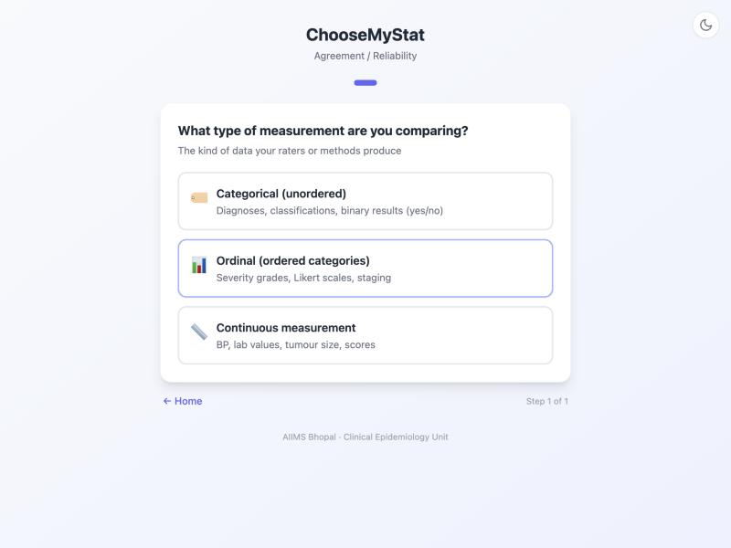
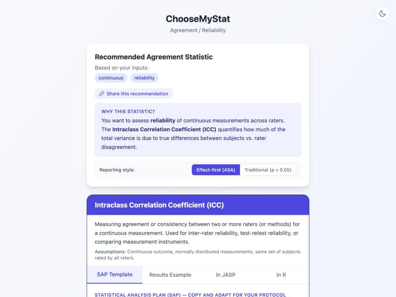

Walk through ChooseMyStat to choose the right reliability measure and calculate the sample size for an inter-rater agreement study of diabetic retinopathy severity scoring.
Dr. Nair, a senior resident in Ophthalmology, is conducting a reliability study at a tertiary eye centre. Two ophthalmologists independently grade diabetic retinopathy severity using standardised fundoscopy images. Each image receives a continuous severity score from 0 to 100 based on the extent and severity of microaneurysms, haemorrhages, exudates, and neovascularisation.
The goal is to assess inter-rater reliability — how consistently the two ophthalmologists assign scores to the same set of images. Before these severity scores can be used in a clinical trial, the measurement tool must demonstrate adequate reliability.
Go to choose-my-stat.vercel.app and click "Choose a Statistical Test".
This time, we are not comparing groups or studying an association. We are assessing agreement between raters. The app has a dedicated pathway for this.
The first question in the Agreement pathway asks: "What type of measurement are you assessing?"
Our severity score (0–100) is a continuous measurement. If instead the raters were assigning categorical grades (e.g., no DR / mild NPDR / moderate NPDR / severe NPDR / PDR), we would choose "Categorical" and the app would recommend Cohen's Kappa or weighted Kappa.

The app asks: "What type of reliability are you assessing?"
We are assessing inter-rater reliability — whether two different raters agree when measuring the same subjects. This is distinct from test-retest reliability (same rater, two time points) or internal consistency (multiple items on a questionnaire).
The app recommends the Intraclass Correlation Coefficient (ICC) as the appropriate reliability measure for continuous data with two or more raters.

The ICC has several variants depending on the study design. The three most common (Shrout & Fleiss 1979 notation) are:
ICC(1,1): Each subject is measured by a different set of randomly selected raters. Rarely used in clinical research (applicable in large screening programmes where each image is read by a random pair of readers).
ICC(2,1): Each subject is measured by the same set of raters, and the raters are considered a random sample from a larger population of potential raters. Use this when you want to generalise beyond the specific raters in your study. This is the most commonly recommended form for clinical reliability studies.
ICC(3,1): Each subject is measured by the same set of raters, and the raters are considered fixed (the only raters of interest). Use this when results apply only to these specific raters. It assesses consistency (relative agreement) rather than absolute agreement.
Absolute agreement: Requires raters to assign the same scores to the same images. Penalises systematic differences (e.g., Rater B always scoring 10 points higher).
Consistency: Only requires the raters to rank images in the same order. Does not penalise systematic offsets. Use this when the absolute level is less important than the relative ordering.
For clinical grading where the actual score matters (e.g., treatment decisions depend on the severity score), choose absolute agreement.
Sample size for ICC studies is based on testing whether the ICC exceeds a specified null value. The calculation depends on the expected ICC (ρ1), the null ICC (ρ0), the number of raters (k), and the desired power.
| Parameter | Value | Why? |
|---|---|---|
| Expected ICC (ρ1) | 0.80 | Good to excellent agreement based on similar fundoscopy reliability studies |
| Null ICC (ρ0) | 0.50 | Fair agreement — the minimum unacceptable level for clinical use |
| Number of raters (k) | 2 | Two ophthalmologists grading each image |
| Alpha (α) | 0.05 | One-sided test (we test H0: ICC ≤ 0.50 vs. H1: ICC > 0.50) |
| Power (1 − β) | 80% | Conventional power |
| Dropout / unusable images | 10% | Some fundoscopy images may be of insufficient quality for grading |
Using Walter et al. (1998) formula for ICC sample size with ρ0 = 0.50, ρ1 = 0.80, k = 2 raters, α = 0.05 (one-sided), power = 80%:
You need 19 fundoscopy images graded by both ophthalmologists to test whether the ICC exceeds 0.50 with 80% power. After adding 10% for unusable images, collect 22 images.
ChooseMyStat provides several ready-to-use outputs for your reliability study:
A pre-written paragraph describing the ICC analysis plan, specifying the ICC type, agreement definition, and interpretation benchmarks.
A template showing how to report ICC results: point estimate, 95% CI, and qualitative interpretation using Cicchetti's benchmarks.
Ready-to-run R code using the irr package (icc function) for computing ICC with confidence intervals and selecting the correct ICC type.
Guidance on supplementing the ICC with a Bland-Altman plot — a visual method for assessing agreement that shows the bias and limits of agreement between the two raters.
Ready to find the right test for your study?
Try ChooseMyStat Yourself